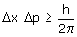

|
Cuando se midan a la vez la posición y el momento de una partícula, el producto de las indetermina-ciones en dichas medidas tendrá que ser mayor que h/(2π). Es decir: cuanto mejor se conozca la posición peor se conocerá el momento. Esto matemáticamente se expresa así:  El principio de Heisemberg confirma
la dualidad onda-partícula y la imposibilidad de observarla simul-táneamente.
La posición define el aspecto corpuscular y el momento define el
aspecto ondulatorio |